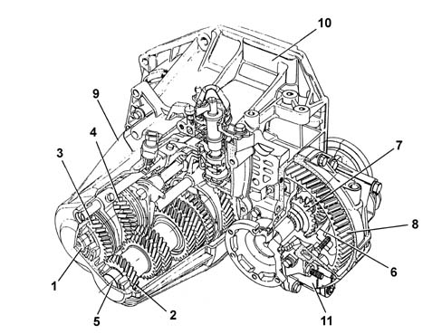

MANUAL GEARBOX AND DIFFERENTIAL ASSEMBLY
- Path
- Descriptions > 21 GEARBOX > MANUAL GEARBOX AND DIFFERENTIAL ASSEMBLY
- Kind
- system description
- Applies to
- engines: 2.0 TB, 2.4 20V, 2.4 JTD 10V; all production periods
- Interactive page
- https://sloeber94.github.io/elrnDB-lThss/en/#/201609
Applies to: all engines; all production periods
CONSTRUCTION SPECIFICATIONS
The structure of the gearbox consists of:
- a gearbox casing configuration with the elimination of the rear cover. This contains and supports the main and lay shafts, the gear engagement forks and rods and the gear selector/engagement device.
- bell housing which contains the clutch, the thrust bearing and the control device.

- 1. Main shaft.
- 2. 6th speed drive gear.
- 3. 5th speed drive gear.
- 4. 4th speed drive gear.
- 5. Layshaft.
- 6. Satellite gears.
- 7. Planet gears.
- 8. Ring gear.
- 9. Gearbox casing.
- 10. Clutch casing.
- 11. Differential support casing.